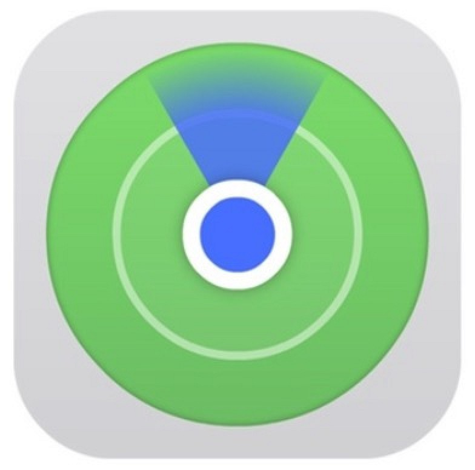

Localiser des appareils
Localisez votre iPhone, iPad, Mac, Apple Watch, vos AirPods ou vos écouteurs Beats, ou aidez à localiser les appareils de votre groupe de partage familial.
En savoir plus sur Localiser des appareils